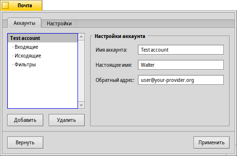

| Содержание |
|
Создание нового почтового аккаунта Настройки аккаунта Настройки входящей почты Настройки исходящей почты Настройки почтовых фильтров Настройка почтового сервиса |
 Электронная почта (E-mail)
Электронная почта (E-mail)
| Расположение в Deskbar: | ||
| Расположение в Tracker: | /boot/system/preferences/E-mail | |
| Настройки хранятся по адресу: | ~/config/settings/Mail/* |
В Haiku включена система, которая регулярно доставляет электронную почту через почтовый сервис (также известный как mail_daemon) и сохраняет каждое письмо как один текстовый файл. Она анализирует письмо и заполняет его атрибуты всей необходимой информацией: от кого оно, к кому, тема письма и статус, что оно не прочитано, после чего эти данные становятся доступны вам и любому приложению. Также эта система позволяет легко менять почтовые клиенты, так как все данные и настройки остаются неизменными. Все параметры настраиваются в панели настроек электронной почты (E-Mail).
 Создание нового аккаунта электронной почты
Создание нового аккаунта электронной почты
Пройдем через весь процесс настройки учетной записи электронной почты.
Сперва нажмите на кнопку , чтобы создать новый аккаунт. При этом откроется панель, в которой необходимо заполнить ваши регистрационные данные:

Вначале, вы выбираете, как вы будете получать свою почту: через протокол или .
Теперь введите ваш E-mail адрес, Имя пользователя и Пароль, задайте Имя аккаунта, которое будет использоваться в Haiku, и ваше Настоящее имя.
Если у вас аккаунт от крупного провайдера электронной почты, то в Haiku уже встроены технические сведения, такие как IP-адреса серверов. Эта информация заполнится автоматически. Если этого не произошло, нажатие кнопки откроет другое окно, где можно будет ввести нужную информацию вручную:

Сперва задайте Имя сервера, Метод аутентификации и Тип соединения для входящей почты, затем, ниже - для исходящей. Необходимую информацию можно найти на сайте вашего поставщика услуг электронной почты.
Ниже вы найдете больше информации о различных настройках и дополнительных опциях.
Настройки аккаунта
Выбрав имя аккаунта в списке слева, можно изменить некоторые общие настройки:
Имя аккаунта - это имя, которое обображается, в том числе, в списке аккаунтов в настройках Почты. Настоящее имя - имя, которое увидит ваш адресат, получив письмо от вас. Обратный адрес - это адрес, который используется, когда кто-либо отвечает на ваше письмо. Обычно это тот же адрес, с которого письмо было отправлено.
Если вы хотите только отправлять или только получать почту с аккаунта, вы можете активировать или деактивировать эту функцию, щелкнув правой кнопкой мыши на имени аккаунта в списке и поставив или убрав соответствующие галочки в контекстном меню.
Настройки входящей электронной почты
Кликните на под названием вашего аккаунта для настройки получения электронной почты.

Сперва укажите адрес для входящих писем. Если ваш провайдер требует подключения через определенный порт, добавьте его к адресу через двоеточие. Например, pop.your-provider.org:1400.
Далее введите свои учетные данные: имя Пользователя и Пароль, и при необходимости измените Метод аутентификации с установленного по умолчанию на .
Если вы используете протокол POP3 и получаете почту через этот аккаунт с разных компьютеров, то вы можете активировать опцию . Удаляться письма с сервера будут только при активации опции .
При использовании протокола IMAP вы можете воспользоваться опцией . Вы также можете таким образом, чтобы синхронизировалась только определенная папка и ее подпапки.
Вы также можете активировать , которые больше определенного размера. При этом будут приниматься только заголовки писем, и вы сможете решить, загружать ли письмо (и вложения, если они есть) целиком, прочитав его тему и адрес отправителя. Это полезно, если у вас медленное соединение.
Вы можете изменить Каталог сохранения для входящих (по умолчанию: /boot/home/mail/in/), что может быть полезно, если вы хотите хранить письма из различных аккаунтов в отдельных папках. Однако запросы позволяют сортировать почту не хуже.
Настройки исходящей электронной почты
Кликните на под именем вашего аккаунта для настройки отправки электронной почты.

Первым идет адрес SMTP-сервера (SMTP Server) для исходящей почты. Как и для сервера входящей почты, вы можете использовать в случае необходимости конкретный порт, например: mail.your-provider.org:1200.
Если необходима авторизация, то измените Тип входа (Login Type) на и выше введите имя пользователя и пароль. Другой тип предназначен для провайдеров, которым для проверки почты нужна .
Как и для входящей почты, вы можете также изменить расположение Папки для отправляемых писем (по умолчанию: /boot/home/mail/out/).
Уведомления и другие фильтры электронной почты
Уведомления о новых письмах и методы сортировки и фильтрации почты находятся в под именем аккаунта. Вы можете добавить любое количество фильтров, которые применяются поочередно, и реорганизовать их путем перетаскивания.
Сейчас вы можете добавлять трех типов. После добавления фильтра выберите его, чтобы посмотреть настройки.
Байесовский спам-фильтр

Фильтр спама использует статистические методы для выявления нежелательных писем. Он присваивает им значения от 0 до 1 и вы сами решаете, какое значение допустимо для подлинной почты, а что будет считаться спамом.
Вы можете добавить этот спам-рейтинг к началу темы.
Кроме того, фильтр спама может обучаться на всей входящей электронной почте. Конечно, вам придётся научить его разбираться с ошибочными срабатываниями - письмами, которые были по ошибке помечены как спам. Более подробно об этом рассказано в описании приложения Почта.
Применяя также следующий фильтр , вы можете автоматически отфильтровывать обнаруженный спам.
Совпадающий заголовок

Этот фильтр сравнивает заголовок письма с шаблоном и выполняет определённое действие согласно заданным вами правилам.
В первом текстовом поле вы определяете какие заголовки сопоставлять. Доступны следующие заголовки:
| имя отправителя. | ||
| адрес электронной почты отправителя. | ||
| ваш адрес электронной почты (различный для каждого аккаунта). | ||
| адрес электронной почты для ответа. | ||
| дата и время получения почты. | ||
| поле для темы письма. | ||
| адрес получающего копию письма. | ||
| название аккаунта электронной почты. | ||
| текущий статус письма: "Прочитано", "Отвечено", "Послано", "Отправлено", "Новое" или любой другой, который вы назначите самостоятельно. Однако, если вы не измените его непосредственно в фильтре, то он всегда будет "Новое" после получения писем почтовым сервисом. | ||
| устанавливается почтовой программой отправителя (например: "Срочно"). | ||
| то же самое, что и "Тема (Subject)", но без приставок типа "Re:" или "Fwd:". | ||
| в зависимости от того, как фильтр спама классифицирует письмо, тут будет пусто (если письмо сомнительно), либо содержаться слово "Подлинное (Genuine)" или "Спам (Spam)". | ||
| это количественная оценка, которую фильтр спама назначил письму. Она показывается в экспоненциальном представлении, где 1.065e-12 преобразовывается в 1.065 поделённое на 10 в 12-ой степени, что в данном случае равняется 0.000000000001065. |
Второе текстовое поле содержит ваш собственный шаблон. Здесь допускаются регулярные выражения, которые предоставляют большую гибкость, но с ними придётся разбираться. Почитайте об этом, оно стоит того, да и простые шаблоны составляются довольно просто.
В выпадающем меню снизу назначается действие при срабатывании шаблона. Можно переместить или удалить письмо, установить ему статус "Прочитано" или любой другой, назначить аккаунт, через который будет сделан ответ.
Уведомление о новой почте

Существует несколько доступных вам способов уведомления о приходе электронной почты. В меню вы найдете несколько опций, которые также можно комбинировать:
| Не уведомлять | ||
| Проигрывает звук события "Новое письмо (New E-mail)", заданный в настройках Звука, для каждого нового письма | ||
| Показывает окно оповещения для каждого нового письма | ||
| Мигает светодиодами, например, индикатором Caps Lock | ||
| Показывает одно окно оповещения для всех новых писем | ||
| Проигрывает звук события "Новое письмо (New E-mail)", заданный в настройках Звука, один раз при получении новой почты | ||
| Показывает окно журнала |
Фильтры для исходящей почты
На данный момент существует только один фильтр, предназначенный для исходящей почты: fortune. Он вставляет в конец письма забавный или мудрый текст ("Колесо Фортуны"), случайно выбранный перед отправкой. Пример можно увидеть, набрав fortune в терминале.
Настройка почтового сервиса
Теперь, когда серверы входящей и исходящей почты (и, возможно, некоторые фильтры) настроены, вы должны указать почтовому сервису когда и каким образом проверять и загружать почту.

В Проверке почты настраивается интервал, с которым будет проверяться наличие новых писем на почтовом сервере для данного аккаунта.
Если вы выходите в интернет через Dial-up модем, то можете активировать проверку , а также , чтобы избежать частого автоматического дозвона только для проверки почты.
Почтовый сервис имеет окно статуса, которое можно настроить, чтобы оно отображалось , , или .
Убедитесь, что активен, в противном случае вы не сможете принимать и отправлять почту.

откроет папку /boot/home/config/Mail/Menu Links/. Все папки, запросы или ссылки на них, помещенные в эту папку, появятся в контекстном меню значка почтового ящика в трее Deskbar.
В этом меню вы также можете , или редактировать .
Зажав SHIFT при вызове контекстного меню, вы получите дополнительные команды:
| Предлагает подменю, позволяющее проверить только один аккаунт | ||
| Позволяет послать письма, ожидающие отправки, не проверяя почту | ||
| Завершает работу всей почтовой инфраструктуры (mail_daemon) |
Значок почтового ящика в трее отображает наличие непрочитанных сообщений (со статусом "Новое"), если таковые имеются.